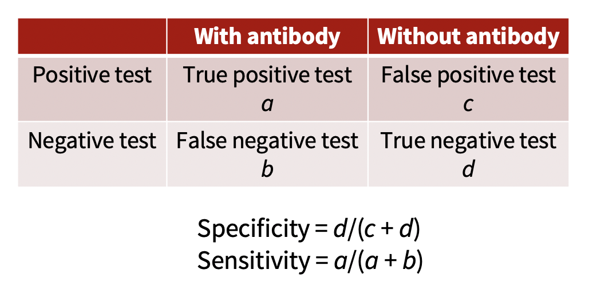

Stanford CS 472 (SCHOOL PROJECT WORK IN PROGRESS)
COVID-19 Serology Study Design and Exploration
JUNE 9, 2020
“Serology,” “seroprevalence,” and “antibody tests” are all buzzy words getting a lot of media attention lately. What do they mean, and, more importantly, what do the results of these studies tell us?
Serology is the study or examination of blood serum, and this component of blood carries antibodies, which serve as both markers of past infection (or vaccination) and defenders against future infection. Recent studies use specialized tests to detect the presence of antibodies specifically against Sars-Cov-2, the virus that causes Covid-19. These tests can give us information about the number of people who have antibodies against Sars-Cov-2, which can help answer both biological and policy questions: How long do people maintain immunity against this virus? What fraction of our local societies potentially have protective antibodies? Is it safe to open certain types of businesses?
However, the answers in this emerging research are not clear-cut, but are complicated by a number of uncertainties. We’ll step through these below.
How many people should be sampled?
Many of these serology studies use different test kits, which adds some uncertainty to the results. Like most things, antibody tests have some error rate, which is often described by two terms:
Specificity, or how specific the test is, describes whether the test reacts only to Sars-Cov-2 (and thus a positive result always denotes an infected individual), or whether it can be triggered by other things in someone’s blood (such as antibodies against another coronavirus, like the one that caused sars or one that causes the common cold). A low specificity means that some positive results will be false positives.
Sensitivity:, or how sensitive the test is, describes whether the test always correctly detects someone with Sars-Cov-2 antibodies, or whether some go undetected. A low sensitivity means that some negative results will be false negatives.

Many good tests have specificities in the high 90s (as a percent), and about 90% sensitivities. You can explore how these errors change how many people one needs to sample:
You can easily imagine that if 9 out of 10 (90%) of people have antibodies, you can get a pretty good estimate of this after testing only a couple dozen people. But if only 1 out of 100 people have antibodies, you will need to test far more people in order to accurately determine this. This is reflected in the plot above, where you can see the minimal sample size drops as the population prevalence you need to detect increases.
Who should be sampled?
Ideally, when you sample people to have a serology test, you will sample randomly from your population; that is, every individual will have the same chance of being sampled. If you have sampled randomly (and your test is perfect), then the prevalence of COVID-19 antibodies in your sample should reflect the prevalence of COVID-19 antibodies in your population.
However, getting a truly random sample is difficult, and we may inadvertently over- or undersample individuals who had COVID-19. For example, we may oversample those who had COVID-19 because taking a serology test may be more attractive to them. Alternatively, we may undersample those who had COVID-19 by sampling from a neighborhood or region with a particularly low COVID-19 prevalence. We refer to this over- and under-sampling as “bias”, and different study designs will have different levels of bias.
Adjusting estimates
To estimate population-level COVID-19 prevalence, we will use a technique called the “bootstrap” - and we’ll start with an example.
On the left, we simulate testing 100 people from a population that is truly 5% positive for antibodies. You can see if we run this test many times, we get many different estimates for the true positive rate, just because we picked different people.
Most of the time it’s around 5%, but sometimes it’s 1%, and sometimes it’s 12%. Because it’s a simulation, it’s easy to run many times, but real tests are expensive and time consuming to conduct, so testing the right number of people is important. On the right you can see what happens if we instead simulate testing 1000 people. In this case, we get much closer to the right answer (5%) much more often. This simulation is referred to as the bootstrap.
Now, suppose you have test results for a random sample of your population. Instead of simulating testing like we did above, you can resample from your test results. If you tested 100 people, you will form a “new sample of 100 people” by choosing 100 people at random from your sample (and in doing so, you may sample the same person multiple times). If you repeat this process many times, you will again see a distribution like those above.
We can use this idea to adjust for bias in our sample. Suppose we know that we oversampled people with COVID-19 antibodies - we may think that our sample has twice as many people with COVID-19 antibodies as the general population. Before we resample from our test results (as we did above), we can change half of our observed positive tests to negative tests. This allows us to adjust our estimate of COVID-19 prevalence to account for bias in our sampling method.
We have one more adjustment to make: we recall that our tests aren’t perfect - each test has a sensitivity and specificity, and we can incorporate the test’s sensitivity and specificity into our bootstrapping. The test manufacturers report the number of positive and negative samples from their validation tests; we resample these to obtain estimates of sensitivity and specificity that we use to estimate the COVID-19 population prevalence.
You can explore how changing bias affects your estimate of COVID-19 prevalence below. We’ll note that when bias is 1, we assume there is no bias - we have a true random sample. When bias is less than 1, we assume that people who had COVID-19 were less likely to take the serology test, and we adjust our estimate accordingly. Similarly, when bias is greater than 1, we assume that people who had COVID-19 were more likely to take the serology test.
Closing + [Add link to paper here?]
Team: Margaret Antonio, Erin Craig, Cayla Miller, Lijing Wang, and Utkarsh Tandon
Mentors: James Zou and Michael Wu